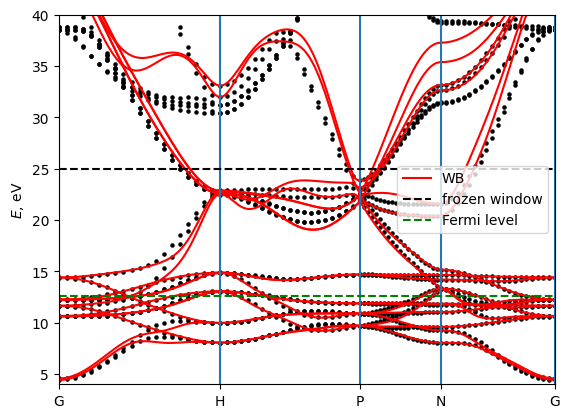
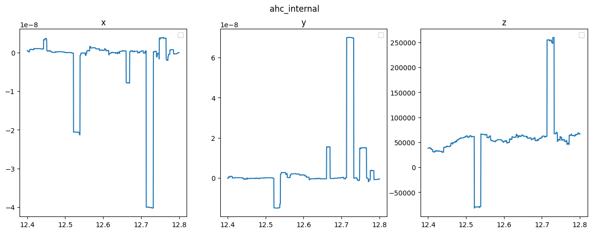
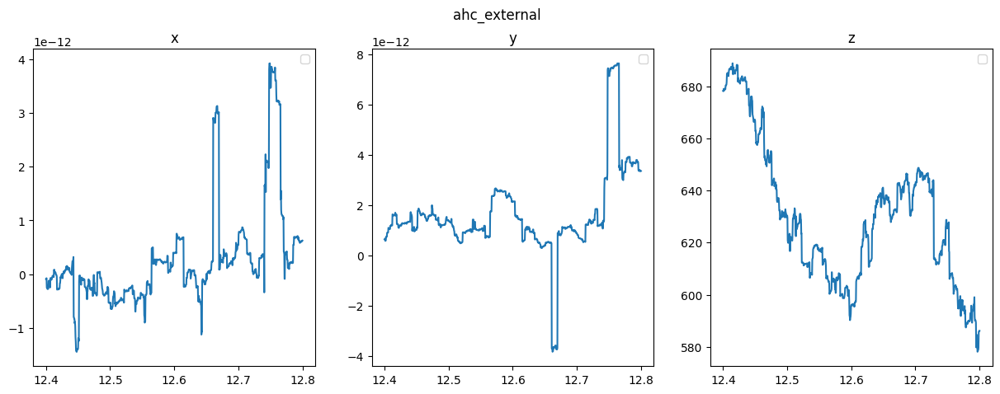
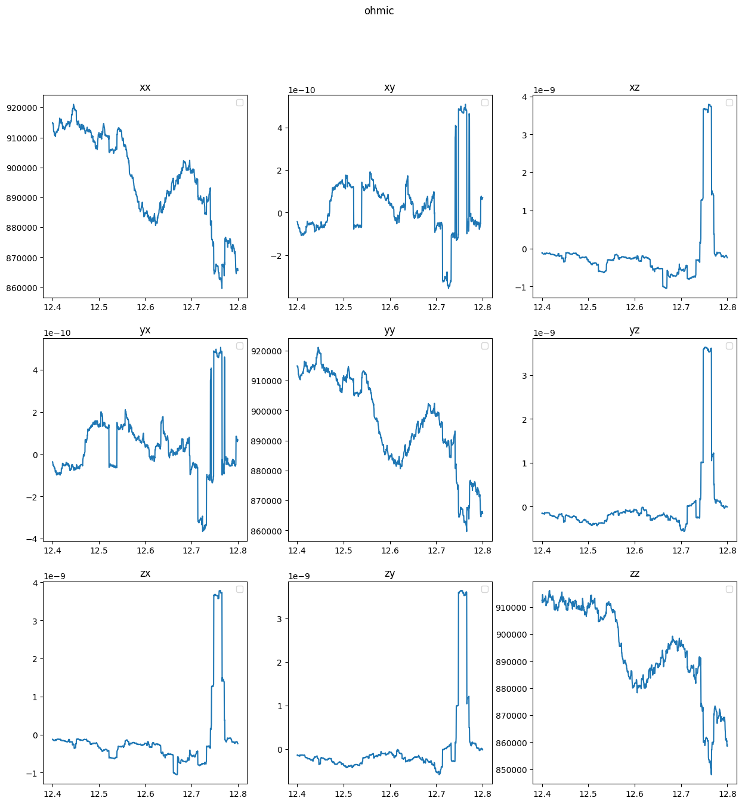

Wannierisation (including SAWF)
This tutorial shows how to construct (Symmetry adapted) Wannier functions with WannierBerri, with magnetic symmetries. We will use the example of bcc Fe.
0. Compute QuantumEspresso files
in tthe tutorial repository only the input files for Quantum ESPRESSO are provided to obtain the necessary files one needs to run
pw.x < Fe_pw_scf_in > Fe_pw_scf_out
pw.x < Fe_pw_nscf_in > Fe_pw_nscf_out
wannier90.x -pp Fe
pw2wannier90.x < Fe_pw2wan_in > Fe_pw2wan_out
1. Setup
First import modules and set up the parallel environment
[1]:
import ray
# Initialize Ray with 8 CPU cores
# Do this only once at the beginning of your script. Initializing multiple times will lead to errors.
ray.init(num_cpus=8)
# If needed, you can do ray.shutdown() at the end of your script to clean up resources.
/home/stepan/storage/github/WannierBerri-tutorial/.conda/lib/python3.12/site-packages/tqdm/auto.py:21: TqdmWarning: IProgress not found. Please update jupyter and ipywidgets. See https://ipywidgets.readthedocs.io/en/stable/user_install.html
from .autonotebook import tqdm as notebook_tqdm
2026-10-16 11:23:38,167 INFO util.py:154 -- Missing packages: ['ipywidgets']. Run `pip install -U ipywidgets`, then restart the notebook server for rich notebook output.
2026-10-16 11:23:41,600 INFO worker.py:2004 -- Started a local Ray instance. View the dashboard at http://127.0.0.1:8265
/home/stepan/storage/github/WannierBerri-tutorial/.conda/lib/python3.12/site-packages/ray/_private/worker.py:2052: FutureWarning: Tip: In future versions of Ray, Ray will no longer override accelerator visible devices env var if num_gpus=0 or num_gpus=None (default). To enable this behavior and turn off this error message, set RAY_ACCEL_ENV_VAR_OVERRIDE_ON_ZERO=0
warnings.warn(
[1]:
| Python version: | 3.12.12 |
| Ray version: | 2.54.1 |
| Dashboard: | http://127.0.0.1:8265 |
[2]:
import os
from matplotlib import pyplot as plt
import scipy
import wannierberri as wb
import numpy as np
path_data = "./pwscf/" # adjust path if needed to point to the data in the tests fo wannier-berri repository
assert os.path.exists(path_data), f"Path {path_data} does not exist"
import irrep, spglib
wb.welcome();
.:: . .::: .:::::::. :::. :::.:::. :::. :::.,:::::: :::::::.. :::::::. .,:::::: :::::::.. :::::::.. :::
';;, ;; ;;;' ' ;;`;; ` `;;;;, `;;;`;;;;, `;;; ;;;;;;;'''' ;;;;``;;;; ;;;'';;' ;;;;'''' ;;;;``;;;; ;;;;``;;;; ;;;
'[[, [[, [[' ,[[ '[[, [[[[[. '[[ [[[[[. '[[ [[[ [[cccc [[[,/[[[' [[[__[[\. [[cccc [[[,/[[[' [[[,/[[[' [[[
Y$c$$$c$P c$$$cc$$$c $$$ "Y$c$$ $$$ "Y$c$$ $$$ $$"""" $$$$$$c $$""""Y$$ $$"""" $$$$$$c $$$$$$c $$$
"88"888 888 888, 888 Y88 888 Y88 888 888oo,__ 888b "88bo, _88o,,od8P 888oo,__ 888b "88bo, 888b "88bo,888
"M "M" YMM ""` MMM YM MMM YM MMM """"YUMMM MMMM "W" ""YUMMMP" """"YUMMM MMMM "W" MMMM "W" MMM
Version: 26.10
HTTP://WANNIER-BERRI.ORG
irrep : 3.3.1.dev0+g4f43f138d.d20261016
spglib : 2.6.0
numpy : 2.3.4
scipy : 1.16.2
spgrep : 0.3.11
numba : 0.62.1
pyfftw : 0.15.0
seekpath : 2.2.1
matplotlib : 3.10.7
sympy : 1.14.0
fortio : 0.4
gpaw : 25.7.0
ase : 3.26.0
pythtb : 2.0.0
xmltodict : 1.0.2
############################################################
2. Read the bandstructure from Quantum ESPRESSO
we use the Bnadstructure object form irrep to read the bandstructure from Quantum ESPRESSO. It also can be used to read from VASP, ABINIT, GPAW etc. , see documentation of irrep for more details.
[3]:
from irrep.bandstructure import BandStructure
assert os.path.exists(path_data), f"Path {path_data} does not exist"
bandstructure = BandStructure.from_espresso( # to work with VASP or abinit please refer to the documentation of irrep
prefix=os.path.join(path_data, "Fe"),
magmom=[[0,0,1]], # set the magnetic moments for a magnetic system (units do not matter)
include_TR=True) # set include_TR=False if you do not want to include the symmetries involving time reversal (magnetic symmetries)
spacegroup = bandstructure.spacegroup
# spacegroup.show() # uncomment to see the detected symmetries of the system
3. Create the “w90files”
Here we use the WannierData object, to create the eig, symmetrizer, and mmn file (see below) Note - that are not actually files in w90 format, but some objects that contain the same information
[4]:
wandata = wb.w90files.WannierData.from_bandstructure(
bandstructure=bandstructure,
files = ["eig","symmetrizer", "mmn"] , # remove "mmn" if you do the next step (see below)
irreducible=False # if you do not use any files from the pw2wannier90, you may want to set irreducible=True to only use the irreducible k-points
)
mpgrid = [4 4 4], 64
3.1 Read the mmn file from pw2wannier90 (if needed)
irrep only reads the plane wave coefficients of the wavefunctions, and not the projections (EXCEPT for GPAW). This is totally fine for the symmetrizer, and ok for the amn file, but is very inaccurate for the mmn file.
This step is necessary if :
QE/VASP/Abinit with ultrasoft or PAW pseudopotentials.
Not needed if: * GPAW (projections are read by irrep) * QE/Abinit with norm-conserving pseudopotentials (plane wave coefficients are sufficient to construct the mmn file in this case)
[5]:
mmn = wb.w90files.mmn.MMN.from_w90_file(os.path.join(path_data,"Fe"), bkvec=wandata.bkvec)
wandata.set_file("mmn", mmn, overwrite=True)
file 'mmn' was already set, overwriting it
3.2 Save the w90files with to npz for later use (optional)
You can save the created w90files to npz format for later use, to save time. Later thay can be loaded
[6]:
wandata.to_npz(os.path.join(path_data,"Fe_w90data"))
wandata_loaded = wb.w90files.WannierData.from_npz(os.path.join(path_data,"Fe_w90data"),
files=["eig","symmetrizer", "mmn"])
4 Choose projections
This is similar to wannier90. However, in this case the projections already include the symmetry information.
‘position_num’ may contain only one position of the ornit, in this case the others will be generated by symmetry. However, this should be used with caution, as the generated positions may differ by a lattice vector, which may cause problems in some cases.
4.1 set the amn and symmetry of future Wannier functions
The last line serves two purposes: 1. creates and sets the amn file - initial guess for the Wannier functions 2. sets how the Wannier functions should transform under the symmetry operations.
Both are based on the projections_set object.
[7]:
from wannierberri.symmetry.projections import Projection, ProjectionsSet
# now set the transformations of WFs. Make sure, the projections are consistent with the amn file
proj_s = Projection(position_num = [[0,0,0]], orbital='s', spacegroup=spacegroup)
proj_p = Projection(position_num = [[0,0,0]], orbital='p', spacegroup=spacegroup)
proj_d = Projection(position_num = [[0,0,0]], orbital='d', spacegroup=spacegroup)
projections_set = ProjectionsSet(projections=[proj_s, proj_p, proj_d])
wandata.set_projections(projections_set, bandstructure=bandstructure)
5. Wannierise
Note, that in wannierberri there is not separation into “disentangle” and “wannierise” steps, as in wannier90. Both procedures are done together at every iteration. If you want to do only disentanglement, you can set localise=False. then num_iter will mean the number of disentanglement iterations.
[8]:
froz_max=25
_ = wb.wannierise(
wandata=wandata,
froz_min=4,
froz_max=froz_max,
outer_min=0,
outer_max=100,
print_progress_every=20,
num_iter=100,
conv_tol=1e-6,
localise=True,
sitesym=True,
)
The check of irreps is not implemented for spinor case. Skipping the check, leaving to your responsibility
6. Create System_R object
[9]:
system = wb.system.System_R.from_wannierdata(wandata= wandata, berry=True, transl_inv_JM=True,
symmetrize=True)
# optionally - save it for later use
system.save_npz("Fe_system")
saving num_wann
- Ok!
saving real_lattice
- Ok!
saving iRvec
- Ok!
saving periodic
- Ok!
saving is_phonon
- Ok!
saving wannier_centers_cart
- Ok!
saving pointgroup
- Ok!
saving Ham - Ok!
saving AA - Ok!
7. Bands along path
7.1 calculate bands
[10]:
# all kpoints given in reduced coordinates
path=wb.Path.from_nodes(system,
nodes=[
[0.0000, 0.0000, 0.0000 ], # G
[0.500 ,-0.5000, -0.5000], # H
[0.7500, 0.2500, -0.2500], # P
[0.5000, 0.0000, -0.5000], # N
[0.0000, 0.0000, 0.000 ]
] , # G
labels=["G","H","P","N","G"],
length=200 ) # length [ Ang] ~= 2*pi/dk
bands_path=wb.evaluate_k_path(system, path=path)
symmetry is not used for a tabulation along path
7.2 plot bands
[11]:
# plot the bands and compare with pw
# EF = 12
A = np.loadtxt("./pwscf/Fe_bands_pw.dat")
bohr_ang = scipy.constants.physical_constants['Bohr radius'][0] / 1e-10
alatt = 5.4235* bohr_ang
A[:,0]*= 2*np.pi/alatt
A[:,1] = A[:,1]
plt.scatter(A[:,0], A[:,1], c="black", s=5)
bands_path.plot_path_fat(path,
quantity=None,
# save_file="Fe_bands.pdf",
Eshift=0,
Emin=-10, Emax=50,
iband=None,
mode="fatband",
fatfactor=20,
cut_k=False,
linecolor="red",
close_fig=False,
show_fig=False,
label=f"WB"
)
plt.ylim(4, 40)
plt.hlines(froz_max, 0, A[-1,0], linestyles="dashed", label="frozen window", color="black")
plt.hlines(12.6, 0, A[-1,0], linestyles="dashed", label="Fermi level", color="green")
plt.legend()
plt.savefig("Fe_bands.pdf")

8. AHC and Ohmic conductivity
8.1 calculate
[ ]:
results_grid = {}
efermi = np.linspace(12.4,12.8,1001)
param = dict(Efermi=efermi)
calculators_grid = {
"CDOS": wb.calculators.static.CumDOS(**param),
"ohmic": wb.calculators.static.Ohmic_FermiSea(**param),
"ahc_internal": wb.calculators.static.AHC(kwargs_formula={"external_terms":False}, **param),
"ahc_external": wb.calculators.static.AHC(kwargs_formula={"internal_terms":False}, **param ),
}
grid = wb.Grid(system, NKFFT=6, NK=48)
result_grid = wb.run(system,
grid,
calculators_grid,
fout_name="Fe_grid",
adpt_num_iter=0, # adaptive refinement is not used, because without k-space symmetrization, it may break symmetry
#(when one k-point is refined and its symmetry-related k-points are not refined)
symmetrize=False, # we do not symmetrize here so that we can check how symmetric are the WFs
use_irred_kpt=False,
)
# plot the bands to compare with pw
8.2 Plot
[13]:
def plotxyz(axes, x, data, pre = "", label="",ls="-"):
for i in range(3):
ax =axes[i]
ax.plot(x, data[:,i], ls, label=label)
ax.set_title(f"{pre}{'xyz'[i]}")
quantities = ["ahc_internal", "ahc_external","ohmic"]
nfig = len(quantities)
for quantity in quantities:
fig = None
res = result_grid.results[quantity]
data = res.data
E = res.Energies[0]
if fig is None:
if data.ndim == 2:
nfigx = 1
nfigy = data.shape[1]
elif data.ndim == 3:
nfigx = data.shape[1]
nfigy = data.shape[2]
fig, axes = plt.subplots(nfigx, nfigy, figsize=(5*nfigy,5*nfigx))
if nfigx ==1:
plotxyz(axes, E, data)
else:
for i in range(nfigx):
plotxyz(axes[i], E, data[:,i], pre="xyz"[i], )
for ax in axes.flat:
ax.legend()
fig.suptitle(quantity)
plt.show()
plt.close()
/tmp/ipykernel_128759/1474735278.py:31: UserWarning: No artists with labels found to put in legend. Note that artists whose label start with an underscore are ignored when legend() is called with no argument.
ax.legend()



We can observe that
The symmetry-forbidden components are very small compared to the allowed ones, which shows that the Wannier model is symmetric.
There are huge peaks in the AHC, which will be removed by adaptive refinement and/or denser k-mesh.
For production runs it is recommended to use symmetrize=’True’ and ‘use_irred_kpt=True’ (default)
the “external” terms of AHC are much smaller than the “internal” ones. This is typical, when the Wannier functions are well localized.
The “external” terms have much less juttering, which is due to having less Energy denominators in the formula. This means that they may be converged with a coarser k-mesh. However, they require more computational time and memory per k-point. Therefore, it is recommended to calculate the “internal” and “external” terms in separate runs, with different k-meshes, and then combine them.